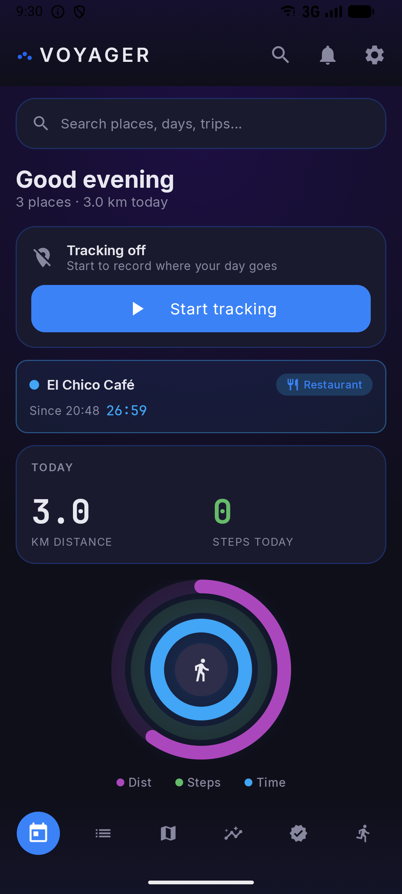
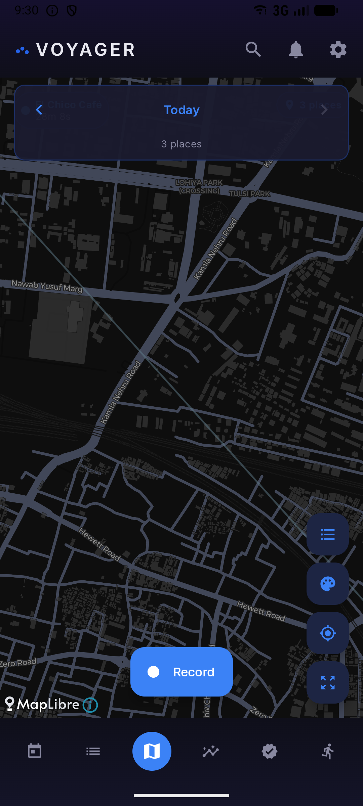
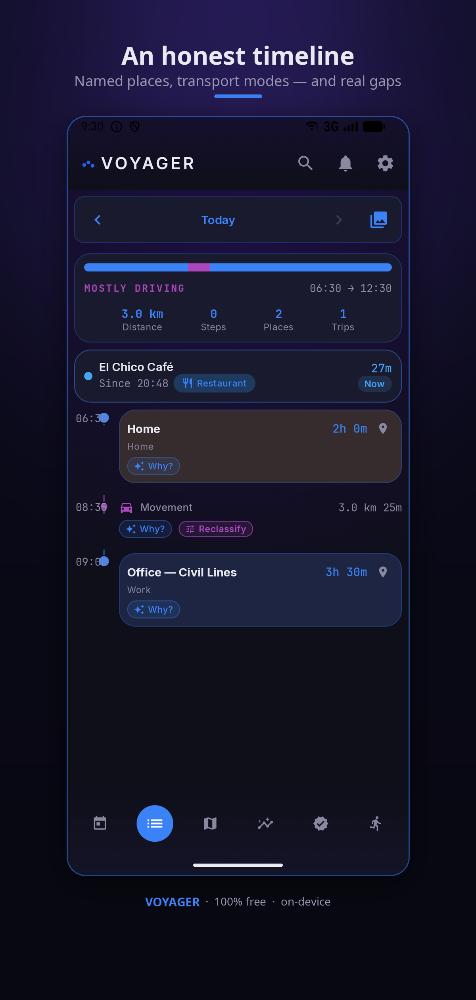
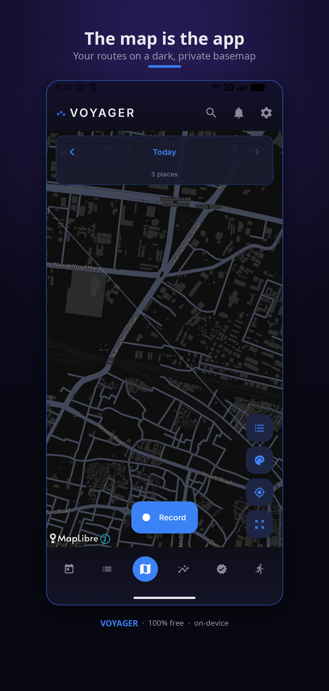
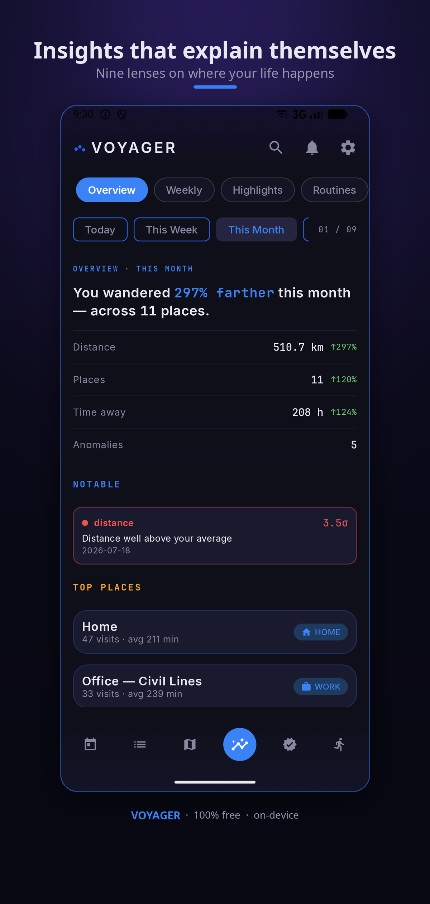
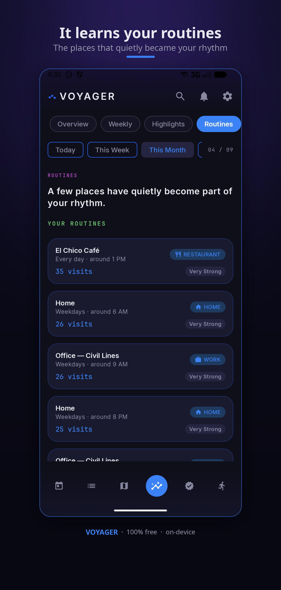
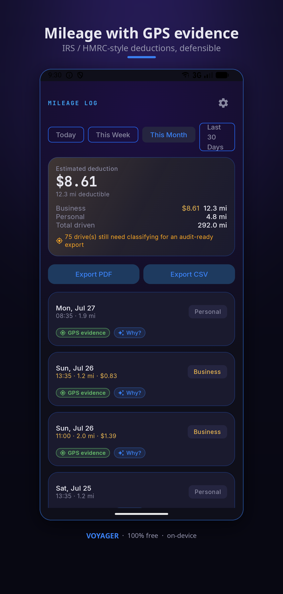
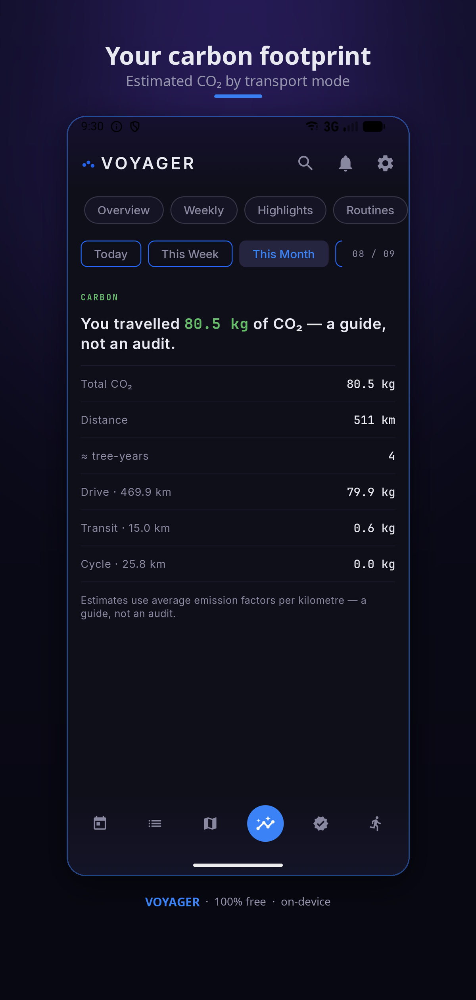
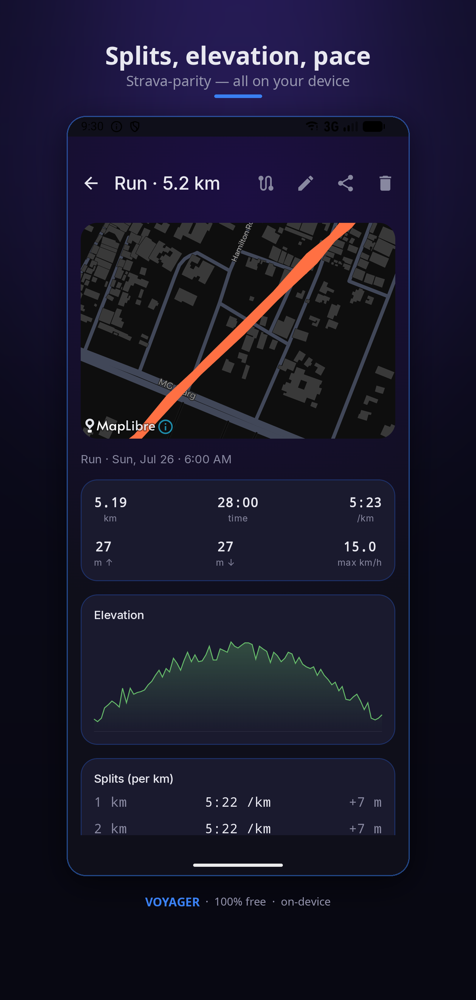
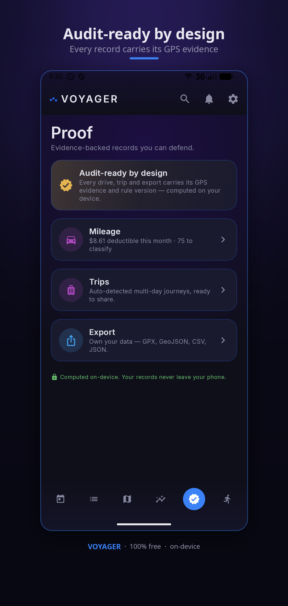

Voyager is a private, on-device timeline that remembers everywhere you've been, proves it when you need to, and shows you your patterns — and it can always explain exactly why it knows. No cloud. No account. No tracking by us.


One private, on-device record — used for everything.
“Where was I, and what was that place?” An automatic, honest timeline of your visits and journeys with real place names — never a bare “Unknown place.”
“Prove my mileage, my trip, my presence.” Audit-ready records where every drive and place carries its GPS evidence — computed on your device.
“Show me my patterns, honestly.” Nine insight lenses read your history back to you — routines, sleep rhythm, a time budget, an estimated carbon footprint, and more.
Four things that don't come standard anywhere else.
Every screen has something to show — here's a taste.








You should own where your life happens — without handing it to anyone.